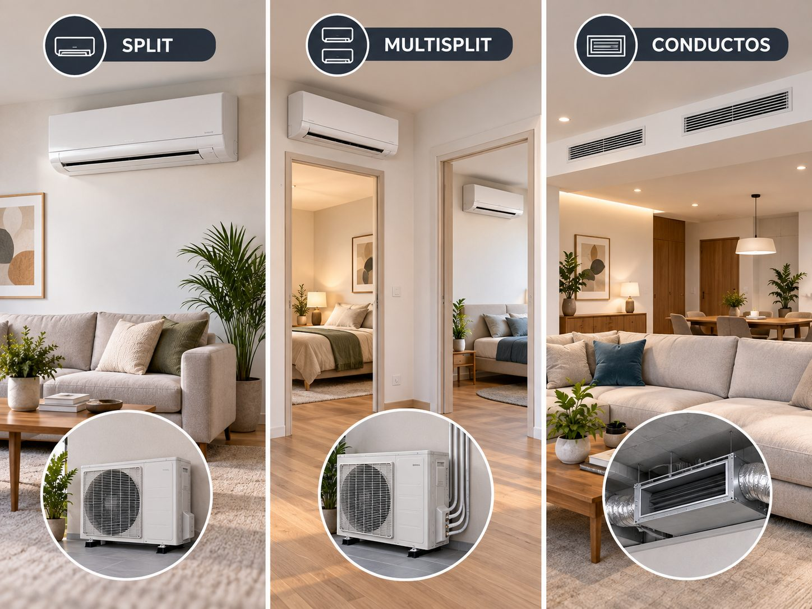

Comparativa técnica y económica de los tres sistemas más habituales de aire acondicionado en vivienda. Cuándo tiene sentido cada uno según nº de estancias, presupuesto y tipo de reforma.

| Aspecto | Split 1×1 | Multisplit | Conductos |
|---|---|---|---|
| Nº estancias que climatiza | 1 | 2 a 5 | Toda la vivienda (con zonificación) |
| Precio orientativo pack completo | 799-1.699 € | 1.799 € (2×1) – 2.599 € (3×1) | 3.500-8.000 € según superficie y zonificación |
| Obra necesaria | Mínima (perforación de fachada + canaleta) | Baja/media (canaletas por techo o rozas si hay reforma) | Alta (falso techo + conductos + rejillas) |
| Estética interior | Unidad visible en pared | Unidad visible en cada estancia | Sólo rejillas planas (casi invisible) |
| Ruido interior | 26-38 dB (silenciado) | 26-38 dB por unidad | < 30 dB (máquina lejos, en falso techo) |
| Ocupación en fachada | 1 unidad exterior por estancia | 1 unidad exterior para 2-5 estancias | 1 unidad exterior para toda la casa |
| Instalación (tiempo) | 4-8 horas | 1-2 días | 2-5 días (más obra de falso techo) |
| Independencia por estancia | Total (cada equipo aparte) | Alta (cada interior con termostato, pero la exterior es común) | Con zonificación: alta. Sin zonificación: baja |
| Eficiencia con uso ligero (1 estancia) | Muy alta — el equipo trabaja en su rango óptimo | Media — la exterior arranca al mínimo aunque sólo pidas 1 interior | Media/alta si hay zonificación (sólo abre la zona pedida) |
| Eficiencia con uso intensivo (todas las estancias) | Alta si son equipos independientes bien dimensionados | Muy alta — una sola exterior optimizada | Muy alta — una sola máquina dimensionada al total |
| Punto único de fallo | No (si falla un split, los otros siguen) | Sí (si falla la exterior, todo apagado) | Sí (si falla la máquina, toda la casa sin A/C) |
| Mantenimiento | Sencillo — 1 exterior + 1 interior | Medio — 1 exterior + varias interiores | Medio — pero acceso a máquina y filtros requiere trampilla en falso techo |
| Facilidad de reemplazo futuro | Alta — cualquier técnico repone en horas | Media — cambio de exterior obliga a cambio de todo el sistema si cambia marca | Baja — más obra si hay que sustituir |
¿Quieres ver las páginas concretas? Consulta Split 1×1, Multisplit o Aire por conductos para precios detallados, especificaciones y ejemplos. También Cassette y Suelo-techo si es proyecto comercial.
¿Sigues sin decidir? Hacemos visita gratuita y te decimos exactamente qué sistema te encaja según tu vivienda, presupuesto y uso previsto — sin compromiso. Y si tienes dudas sobre las frigorías necesarias, revisa antes nuestra guía de cálculo de frigorías.
Un split 1×1 es una unidad exterior conectada a una única unidad interior — refrigera una estancia. Un multisplit tiene una única unidad exterior conectada a 2-5 unidades interiores independientes, cada una con termostato propio. El aire por conductos es una unidad interior oculta en falso techo (o armario técnico) que distribuye aire tratado por conductos hacia rejillas en varias estancias — sin unidades interiores visibles.
Para 2 estancias suele ser similar. A partir de 3 estancias, poner 3 splits separados es más caro en equipo pero más flexible (cada uno funciona independiente, y si se estropea uno los otros siguen). El multisplit ahorra en unidad exterior (una sola) pero encarece la instalación porque requiere más metros de tubería frigorífica y una obra más planificada.
En reformas integrales u obra nueva donde ya hay falso techo previsto. Es la opción más estética (invisible), más silenciosa (la máquina va oculta), y permite climatizar toda la vivienda con una sola unidad. No tiene sentido en vivienda ya reformada sin falso techo — el coste de obra para ocultar los conductos es superior al ahorro.
Depende del uso. Si sólo enfrías una estancia a la vez, el split 1×1 es más eficiente porque la unidad exterior está optimizada para esa potencia. Si vas a usar 2-3 estancias simultáneamente, el multisplit inverter y el conductos con zonificación pueden ser más eficientes que 3 splits independientes trabajando cada uno a media carga.
Sí, con zonificación. Se instalan compuertas motorizadas en cada rejilla y termostatos por estancia. Cuando un termostato pide frío, se abre su compuerta; cuando alcanza consigna, se cierra. Es más caro que un conductos sin zonificar pero mucho más eficiente y cómodo.
No. Split y multisplit son sistemas distintos que no se combinan — la unidad exterior y las tuberías son diferentes. Si prevés ampliar en el futuro, es mejor dimensionar desde el principio una multi con "puertos" libres para conectar interiores posteriores (algunos modelos permiten 4 puertos aunque conectes sólo 2 al inicio).
Si el diseño de conductos es correcto (secciones y velocidades bien dimensionadas) el ruido en rejilla es imperceptible (< 25 dB). Los ruidos aparecen cuando los conductos están infradimensionados y el aire circula a alta velocidad — problema de proyecto, no del sistema en sí.
Visita gratuita, comparativa personalizada y presupuesto sin compromiso.